Pantalla De Inicio
-Para iniciar sesion situa el cursor en el boton iniciar sesion y presiona click derecho para ir a la ventana correspondiente

-Si no tienes un usuario y contraseña pidele al administrador en tu veterinaria mas cercana que te proporcione el tuyo
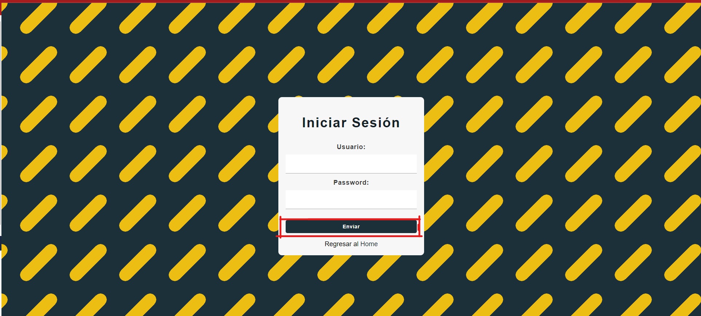-En la pantalla de inicio puede obtener informacion acerca de nuestros porcedimientro y de la empresa

Para Administradores
Aqui como administrador puedes gestionar
Administrar Personas
-Puedes gestionar a tu personal
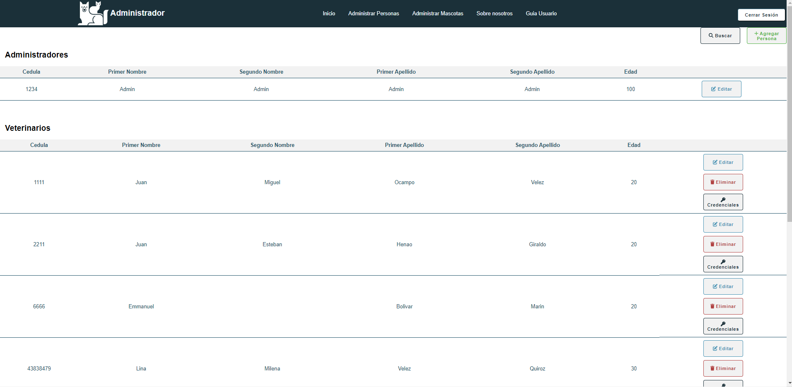-Para editar presiona el boton e ingresaras al formulario para editarlo
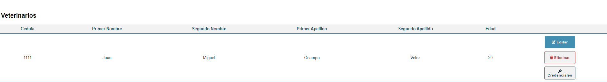-Llena el formulario y envialo para asi se sobreescriba la informacion
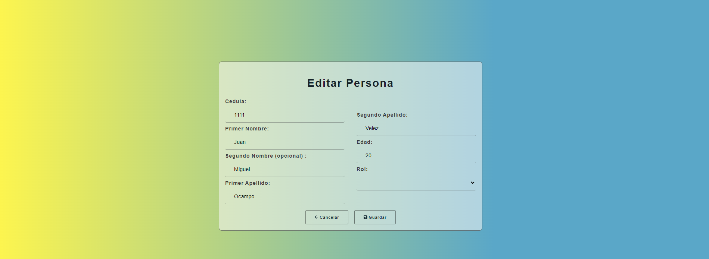-Si deseas eliminar alguna persona presiona en el botron de elimnirar
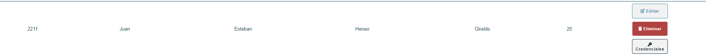-Si deseas ver las credenciales de un vendedor o de un veterinario presiona el boton credenciales y veras las que le corresponde al usuario seleccionado
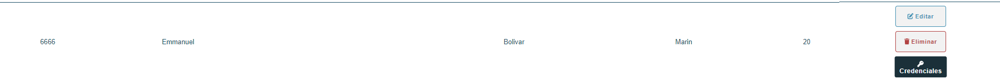 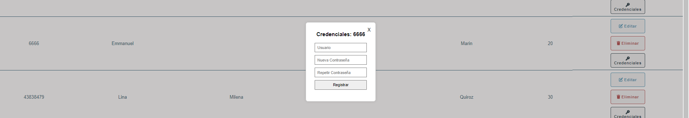Administrar Mascotas
-Para adminsitrar mascotas presionas en este boton e iras alla
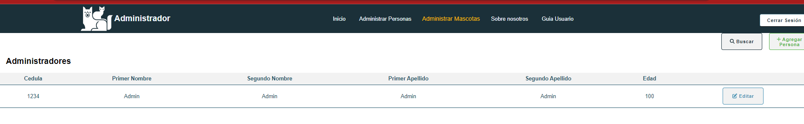-Si deseas agregar una mascota presiona en el botón agregar mascota
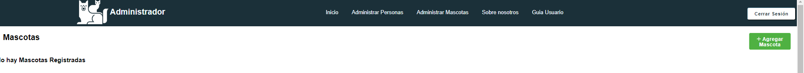-Sí deseas ver el historial de vacunas de alguna mascota presiona el botón
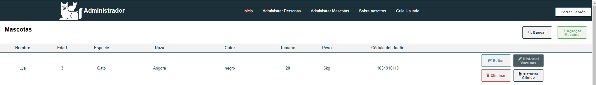-Si deseas ver el historial clínico presiona el botón historial clínico
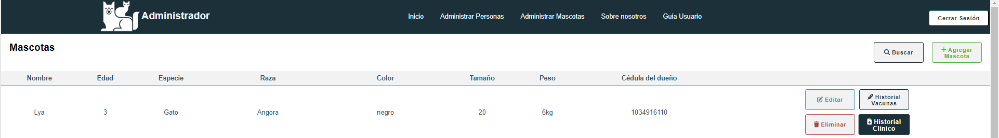-Al seleccionar puedes agregar un registro , editar o eliminar la historia clínica
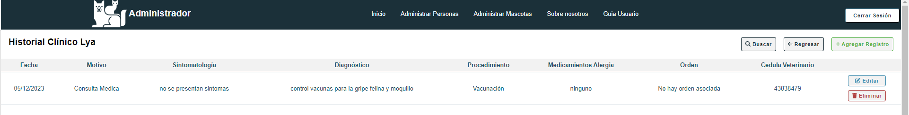-Si presionas agregar un registro aparecerá el siguiente formulario
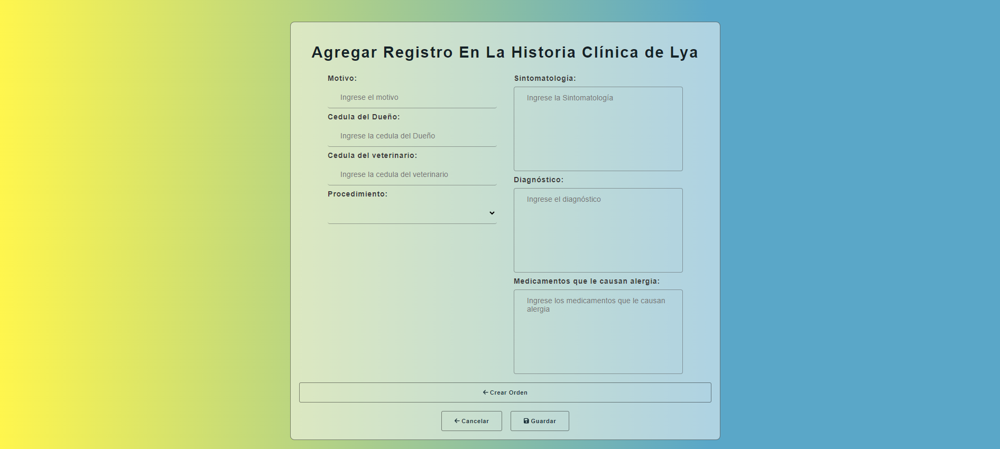